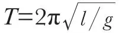

中文
中文Lewis F. Richardson
Editor’s Note
The newly discovered principle of quantum indeterminacy inspired considerable philosophical discussion, and even a few attempts to apply it to human nature and the unpredictability of the individual human action. Here Lewis Fry Richardson writes to ridicule the latter proposition. Is it really necessary, he asks? Science is capable of making accurate predictions, as of the motion of a pendulum, for example, but only if no person interferes with it. The dynamics of something as large as the Moon can be treated with mathematical precision, precisely because no one can interfere with it. But when it comes to human action itself, we can never be sure that one person will not interfere with the workings of their own mind. 中文
IS it really necessary to appeal to anything so recherché as Heisenberg’s Principle of Indeterminacy in order to justify anything so familiar as personal freedom of choice? This question arises on reading Sir Arthur Eddington’s interesting address in Nature of Feb. 13. Consider any one of the laws of physics commonly verified in the laboratory, say

for a simple pendulum. If, while one student is observing the pendulum, another student were to knock it about, the observations might misfit the formula. And so in general: the accepted laws of physics are verified only if no person interferes with the apparatus. We cannot interfere with the moon, because it is so massive and so far away: and that is part of the reason why the motion of the moon is almost deterministic; the “almost” referring to the extremely small Heisenbergian indeterminacy. But there is no great mass or great distance to prevent John Doe interfering with his own brain in the act of making his decision to buy a house from Richard Roe. 中文
(129, 316; 1932)
Lewis F. Richardson: The Technical College, Paisley, Feb. 13.